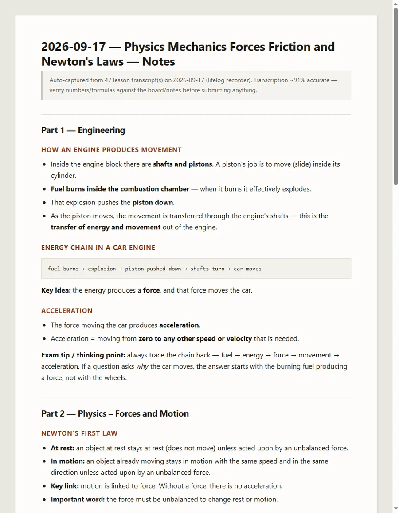

Live
Lecture capture and automatic notes
A recorder runs on my phone through lectures and turns them into finished notes. It uploads in one-minute chunks, transcribes the speech, sorts it by topic, writes a daily document, then sends it back to the phone. The whole pipeline runs unattended as a Windows service.
47 lessons into one document · 12 daily documents so far · ~91% transcription accuracy
I built the phone app, the transcription service, and the document pipeline that joins them.